1. File - New - Dynamic Web Project로 프로젝트 만들기
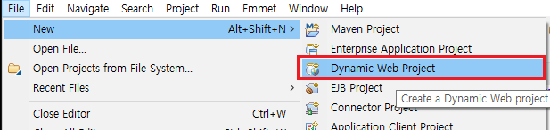
2. 프로젝트명을 우클릭 - New - Other로 들어가서 Server를 찾는다.
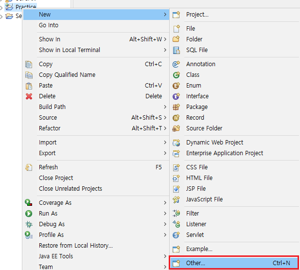
3. Next를 눌러 내가 설치한 서버를 찾는다(설치기준 Tomcat 9.0 사용)
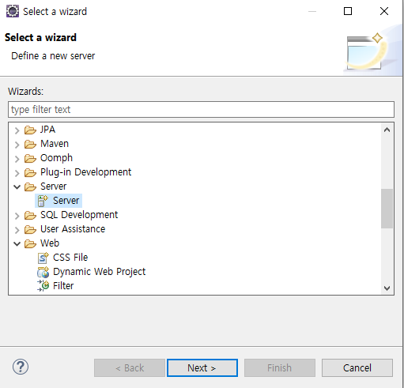
4. 다시 프로젝트명을 우클릭 - Properties에 들어간다
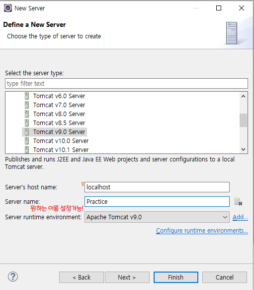
5. Java Build Path에 서버 라이브러리(Tomcat)을 추가한다
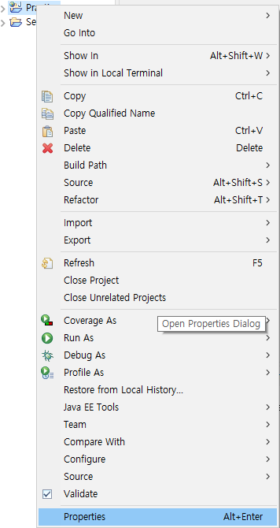
6. Project Facets에서 맞는 Java 버전에 체크하고 오른쪽의 Runtimes에서 서버도 체크해준다
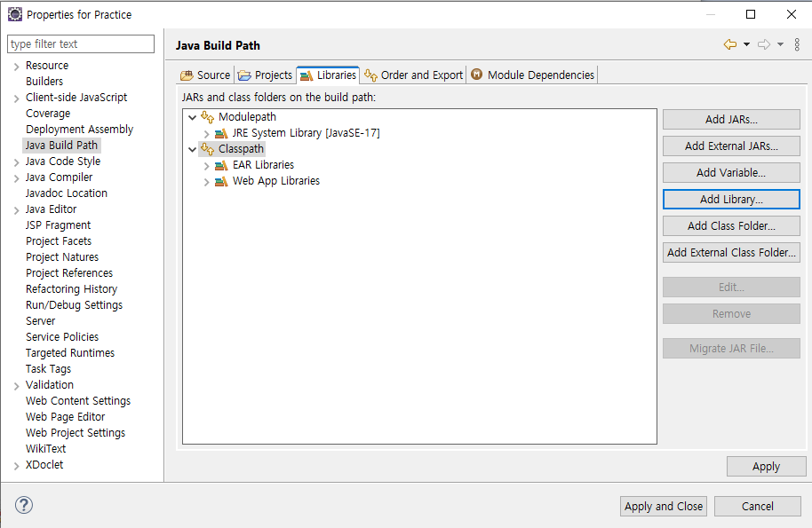
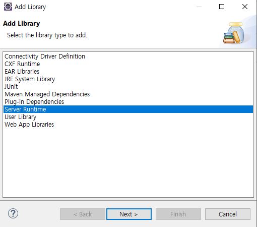
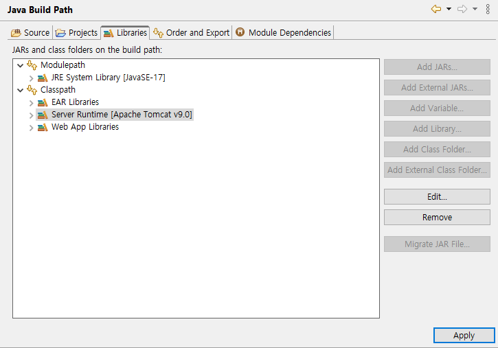
7. Java 버전을 사용하는 버전에 체크하고
Server에서 구동할 서버 선택후 Apply해준다.
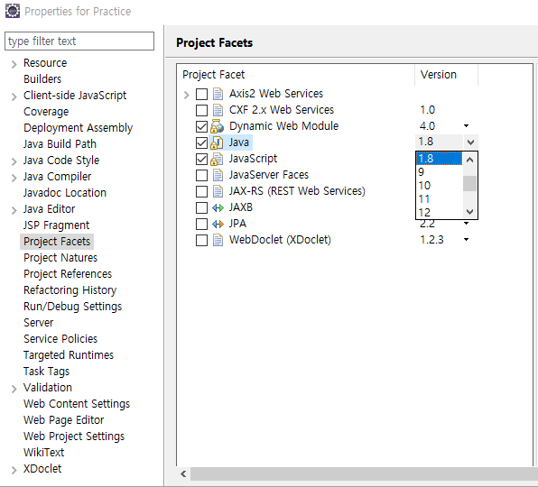
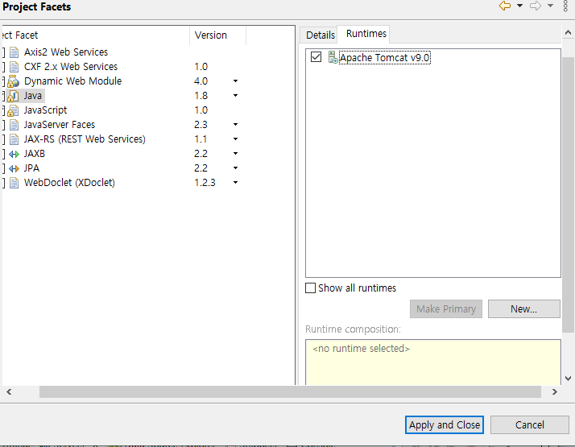
8. Server연결이 확인되었으면 아래쪽에서 Server를 더블클릭 한다.
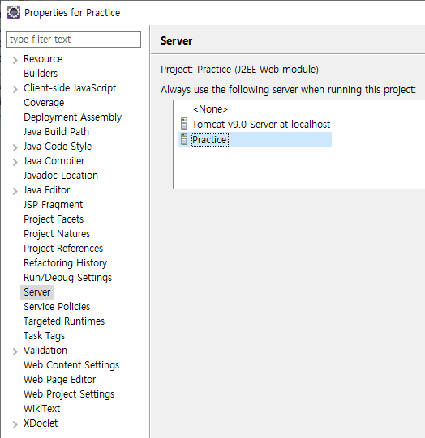
9. 포트번호를 적당히 바꾸어준다 admin과 일반번호는 다르게 설정한다.
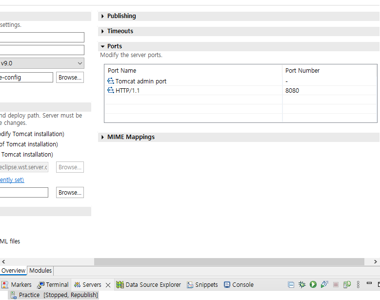
10. 2페이지 모듈로 들어가서 새로운 프로젝트를 추가한다
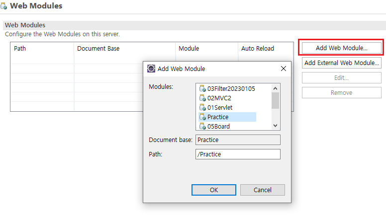
11. Edit를 이용해 경로와 오토리로드 등 세부 설정을 한 후 Ctrl+S로 저장한다.
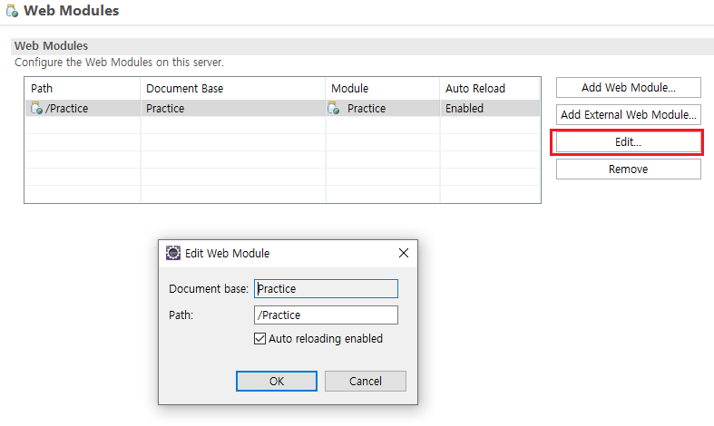
12. src-main-webapp폴더 내에 임의의 jsp파일을 만들어서 정상 구동확인을 한다
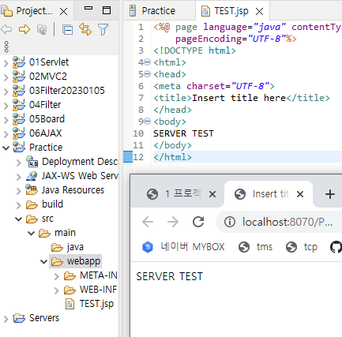